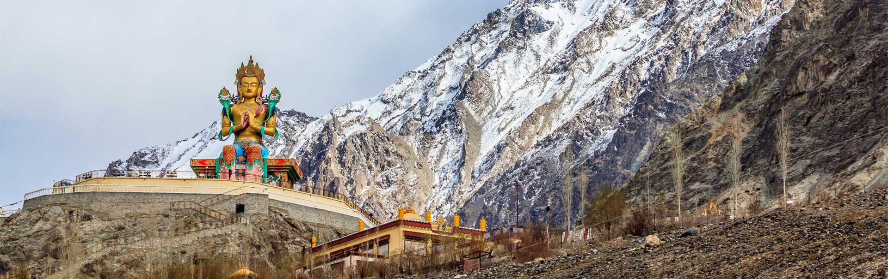
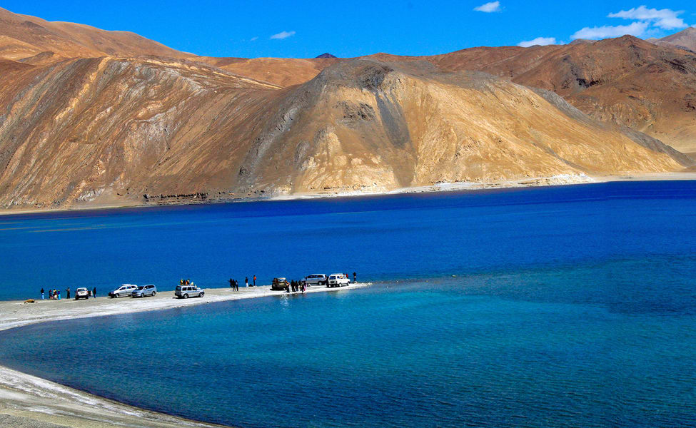
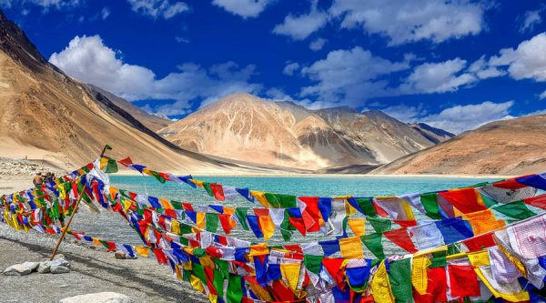

Led Ladakh Tour Packages
6Days/5Night
Jumbo Discount Price Rs.49,999/-
About the Destination
The challenging Himalayan lands of Leh Ladakh welcome you to a complete different altitude of life. This destination is an eye opener because it takes your breath away as it has so much purity to offer, that it arouses an awakening within you. Leh is a small town, which can be rightly called as a ‘Mountain Town.’ The high rising world has this eternal beauty that it could boast about, yet the locals of this land are one of the most humble and loving people on Earth.
Several picturesque and offbeat places form a part of this mystical land, full of flawless natural treasures. All these elements make it Bollywood’s favourite choice of location with movies like 3 idiots, catapulting it into limelight.
The Geography and Seasons
While looking for Leh Ladakh travel packages online, knowing about the geographic and climatic pattern of this region helps a lot for the tour. Jammu and Kashmir’s Ladakh, currently extends from the Kunlun mountain ranges to the main Great Himalayas to the south. It is prominently inhabited by people of Indo-Aryan and Tibetan descent, which is something you can observe in any of the Leh Ladakh tour packages.
The Experience
Leh Ladakh tour packages encompasses amazing experiences which are hard to find in the city life. Not something you find in your everyday routine, this land awaits wonders. Leh Ladakh has this cheesy reputation of being a destination that a photo taken anywhere, even with eyes closed, gives you a remarkable picturesque photo. We provide best possible prices for Leh Ladakh vacation packages online. This land without pollution or complex ideologies of life is known to touch your soul for the inner calling of adventure. Fulfill your wishes to discover the wonders of this land with Veena World’s affordably priced Ladakh holiday package online.

|
|  |
 |
 |
 |
|